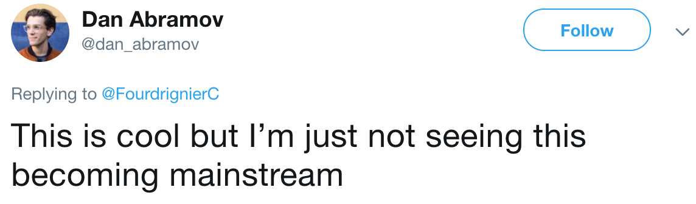
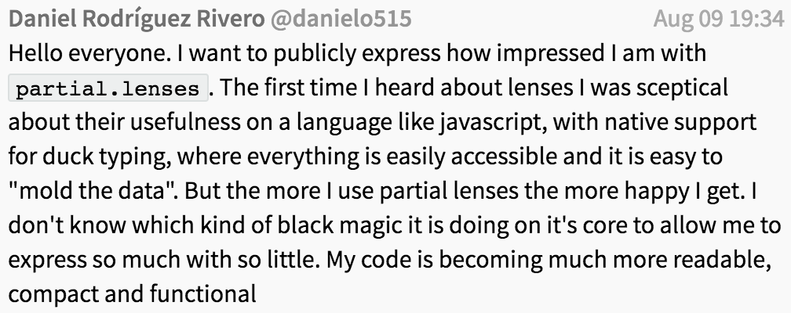

<!doctype html>
<html lang="en">
    <head>
        <meta charset="utf-8">
        <meta name="viewport" content="width=device-width, initial-scale=1.0, maximum-scale=1.0, user-scalable=no">

        <title>Your mental model of optics &mdash; shattered</title>
        <link rel="stylesheet" href="./css/reveal.css">
        <link rel="stylesheet" href="./css/theme/black.css" id="theme">
        <link rel="stylesheet" href="./css/highlight/zenburn.css">
        <link rel="stylesheet" href="./css/print/paper.css" type="text/css" media="print">
          <link rel="stylesheet" href="./assets/slides.css">


    </head>
    <body>

        <div class="reveal">
            <div class="slides"><section  data-markdown><script type="text/template">

# Your mental model of optics *shattered*

Vesa Karvonen

<small class="fragment">(Press 's' for speaker notes, which are for self study.)</small>

<aside class="notes"><p>Welcome!  The speaker notes in these slides contain some additional notes
for people looking through these slides on their own.  These speaker notes do
not contain the whole narrative.  If you find that the point of some slides is
still left mysterious, please <a href="https://gitter.im/calmm-js/chat">let me know</a> and
I&#39;ll try to add some additional notes.</p>
</aside></script></section><section  data-markdown><script type="text/template">
## Part I - Motivation
</script></section><section  data-markdown><script type="text/template">
> My mental model of lenses is that of a path into a data structure. — A
> colleague

🤔

<aside class="notes"><p>What could that mean?</p>
</aside></script></section><section  data-markdown><script type="text/template">
```js
R.view(R.lensPath(['foo', 0, 'bar']),        data)
 R.set(R.lensPath(['foo', 0, 'bar']), value, data)
R.over(R.lensPath(['foo', 0, 'bar']),    fn, data)
```

*Is that it?*

<aside class="notes"><p>No, that is not enough.  Well, thinking of lenses as paths, for a suitably
flexible definition of path, isn&#39;t a bad model for lenses, but for optics in
general it is much too limited.  The goal of this presentation is to show some
non-trivial &mdash; &quot;mind blowing&quot; is what I literally promised &mdash; usages
of optics to broaden the idea of what optics can be used for.  Just to be clear,
I don&#39;t consider all of the examples mind blowing, but, indeed, several of the
examples are far more complex than typical use cases.  So, don&#39;t let the
examples frighten you away from optics.</p>
</aside></script></section><section  data-markdown><script type="text/template">
> Most papers in computer science describe how their author learned what someone
> else already knew. — Peter Landin

<aside class="notes"><p>And this presentation isn&#39;t any different.</p>
</aside></script></section><section  data-markdown><script type="text/template">
Been working on *and* with lenses for 3 years now.

I've learned a lot.

I see there is more to learn.

I can't hope to teach you everything.

I hope to trick some of you to *start learning*.

<span class="fragment">*Are lenses worth learning?*</span> <span
class="fragment">**ABSOLUTELY!**</span>

<aside class="notes"><p>Seriously.  Learning optics takes time, but as we&#39;ll see they offer a
different and powerful approach to data manipulation.  Many of the later
examples in these slides present stuff I couldn&#39;t have even dreamed of three
years ago.</p>
</aside></script></section><section  data-markdown><script type="text/template">
## Optics

* <!-- .element: class="fragment" -->Are based on solid theory and principles
* <!-- .element: class="fragment" -->Make hard problems simpler and easier
* <!-- .element: class="fragment" -->Are fundamentally efficient

<!-- .element: class="fragment" -->Optics are a *game changer*

<aside class="notes"><p>We&#39;ll actually not be going too much into theory in the presentation, but
the other claims will definitely be addressed.  When presenting a topic, I have
a tendency to try to mention a lot of related details for completeness.  I have
decided leave such things out of this presentation.  So, if you find that e.g. I
didn&#39;t mention some related generalization or list full set of related concepts,
then most likely that is because I made a decision to leave that out due to
desire to keep the presentation shorter.</p>
</aside></script></section><section  data-markdown><script type="text/template">
## Part II - Basics
</script></section><section  data-markdown><script type="text/template">
## So what are optics?

> An optic is a function that knows how to take apart or transform a data
> structure in some particular way and then put it back together.

*<span class="fragment">Traversals,</span> <span class="fragment">Lenses,</span> <span class="fragment">Isomorphisms,</span> <span class="fragment">..., Getters</span>*
</script></section><section  data-markdown><script type="text/template">
[Taking apart an
object](https://calmm-js.github.io/partial.lenses/playground.html#PTAEBUEMGsEsDsDmpIAdICcAuL6gPYBGAVgKYDGOCoAtgK4A2WsqDpoAJrAGbekal4OAO6QAngGcAUFPL54EnB0hZIoALygA3gA8AXKADkkQwBpQYg4cJnQALyvlDAXxkgAMgDpEpLAApDHVtlVQBKKQ9PCV8AoPNDAEEk4JVIcMiBGnwAN1JYlLCI4C8ffy9oUjFSDnMQtKKvaP8AbXLK6vMABi6AXXiAMQB5QYL6yLkGNko-L0EsDFhSCVrU9OLvGK80VjEEss85haXzLwFcjGjQlcLIpr9Wz22GXf3DxeXQU9Jzy-iTPqMAHVIBIALRxTirBqeCZTfYVSTXMbrGgIWD0GgzTwIj51NZeYj4BABUG2NqIyE3FH4LjcMRYnHmABKMPk5BUAX6+HwpKulORXlhFH22UgDDox35+M8WVp9K8ovFkpZcng7P8hgAQpheUjpaUsVwJISEP4ERoAHygc3qW1GIKgAD8RkImEMoCs3G5hj5eOhBq8qAw+FQEny8TEPr1-s2niDIYkAFEdORSKgNRDDJHfVDIgGZdsEIg-H4dOYxOY7KFLaBmrpy5XnOZmmXtBX7M4ej0c1TPH2gA)
&mdash; [with
narrative](https://calmm-js.github.io/partial.lenses/playground.html#PTAEBUEMGsEsDsDmpIAdICcAuL6gPYBGAVgKYDGOCoAtgK4A2WsqDpoAJrAGbekal4OAO6QAngGcAUFPL54EnB0hZIoALygA3gA8AXKADkkQwBpQYg4cJnQALyvlDAXxkgAMgDpEpLAApDHVtlVQBKUAjIqOiY2OiQUABBcnJSCQlQVAx8VH4sMVAsAAtsukQilFA2BSkPTwlfAKDzQ0S24JVIcLieuISAZV9M7NzsAuLS8srq6TqBGnwAN1ImjrDejZ6EgCVSBeXhnLzxkvwyirUZ2uAvH38vaFIxUg5zEK7Nz6iEgDVYUmEBBIFBwkAymAw4gI3EykFgGAyEzOU0geFgEnw1y8DX8AG0Hk8XuYAAwkgC6LQAYgB5alrD6fBIAWXwXG4BSIZEohVO5yqggychoqHwElgzHkWM8cgYbEofi8giwGH+EjenW6X1iv3+gKyR2wqpQGXQ8MRvJRhUhywRkAYUruCs8aFYYkS908SpVaXMXgENoaoXV62+YAAkvAbThOSCeZMKuj8KAhSKxRL4FKcX58c7UK73U6varfZ5-fxAy0TBSjAB1MEAWmanA1EQSqI4tFZPBO8dA4qlMrlHsekmDDK1WzAAGF8LLYyPzb21MrIAG7VKaAhYPQaE6F2PNRPtWB8Bhk-hhXQsOxN-Bt3QaNDQAupcR8AgAvXbATR82Q0f4hPM832oBdjUqRQVSQDcu3ZPcnjVUBtmleRyBUAJKXwfAvyDP9xxiBJT07NkChfOpBxBJ1FjtOgfTww8ANbadZyHUBqIYWjF2RC4rVXct1zqBYSKomi6OQuR4DQ-xDAAIUwHCD2PAgzyE7seT2B1Gi8LgJBAoQ-BHDQAD5nyeDR1E0QJDFAAB+IxCEwayrG4LDDFw95wgGVhxUOUZmDSQokx0vScAkOhCBxWYbm8LTPH1VAJFWFoxDcxSAJ1AECHgBgCjUCRcnIHhYHIUAwoioZ8BhVEgS5LBNI9eKJAAUR0VJUGkptDBS9yW02DLAVIG0xGKBBkFIVrSHaiCCqKkqypxeqnRoF1Rr8PwdHMMRzDscJ1BM3FdE27bnHMXENu0Lb7GcMkyR6kNmTQGrYywIKeD4AQhFK5U6EoOgBGuTxAbcMAayKFQeXRTIGHERBSngDsOD2eRIJUALIeKFRzEGwRQBcs8wvIHixWFNgnsoUxrnUgQUGp+AH34M4MlESRArY3VSovdh0GwZTYWwDJKr7HAkT5HJmHICRPEpyk-uKfgFgELHIEJp9ilFdhmYySHCFgLgBEoWB5Dtcw7QYfBhFGrL2Be0B4HwaNsrESmUyvdgMRoXwikt7hskfOW2YBcxCCvFAGAxVnVPZdTlNgRAEDtMm6oSEWpnFTwgA)

<aside class="notes"><p>The point of the example is to show that there are indeed many different
ways to view an object using optics and that through each of those views we can
still manipulate the original object.  More on the API later.</p>
</aside></script></section><section  data-markdown><script type="text/template">
## So what do you think?

<!-- .element: class="fragment" -->I know! I'll ask around!
</script></section><section  data-markdown><script type="text/template">


👌

<aside class="notes"><p><a href="https://twitter.com/dan_abramov/status/1046053791899021312">See here</a>.
Oh dear.  What can I say?  I actually agree that optics are probably not going
to be really mainstream any time soon.  That is not necessarily a bad thing.
Optics can be a really powerful tool in the right hands and it takes time for
knowledge to spread.</p>
</aside></script></section><section  data-markdown><script type="text/template">


<!-- .element: class="fragment" -->Indeed! ☝

<aside class="notes"><p>Now that is something that I can hopefully help with.  Optics indeed
provide a different API compared to typical utility libraries.  Let me explain.</p>
</aside></script></section><section  data-markdown><script type="text/template">
## API

```js
operation( [   params,   ] optic   [, params], data )
```

```js
    L.get(                 'x'               , data )
L.collect(                 L.values          , data )
 L.modify(                 L.values , R.inc  , data )
 L.joinAs( R.toUpper, '-', L.keys            , data )
```

**_Operation_** is separated from **_Optic_**!

<!-- .element: class="fragment" -->What does an optic do?

<!-- .element: class="fragment" -->Optic does *selection* and
*[invariant](https://github.com/calmm-js/partial.lenses/#bst-as-a-lens)
maintenance*.

<aside class="notes"><p>We will not discuss invariant maintenance in this presentation, but if you
consider optics for accessing values in a search tree, for example, then part of
what such optics do is that they maintain the ordering and balancing invariants
of the tree.  Also note that operations (and also optic combinators) are usually
curried, which is why they take the data as the last parameters.  Other
parameters tend to be organized either due to some tradition or are ordered
based on what seems like the most useful order for partial application.</p>
</aside></script></section><section  data-markdown><script type="text/template">
## API

```js
   R.map (              fn , array )
L.modify (    L.elems , fn , array )
```

```js
   R.map (              fn , object )
L.modify (   L.values , fn , object )
```

In traditional APIs operation and selection are fused and often overloaded.
</script></section><section  data-markdown><script type="text/template">
## API

```js
R.chain(R.values, data)

L.collect([L.elems, L.values], data)
//        ^^^^^^^^^^^^^^^^^^^
```

```js
R.map(R.map(R.toUpper), data)

L.modify([L.elems, L.values], R.toUpper, data)
//       ^^^^^^^^^^^^^^^^^^^
```

Optic composition is constant when the selection of elements is constant.

<aside class="notes"><p>At this point I hope that you realize that this separation of selection
from operation is a distinct advantage of optics.  It means that one can worry
about the two separately.  It is typically much more straightforward to compose
an optic to select some desired elements to operate on than compose an operation
using functions such as <code>map</code>, <code>filter</code>, <code>reduce</code>, <code>chain</code>, etc... to correctly
and efficiently both select and carry out the desired operation.</p>
</aside></script></section><section  data-markdown><script type="text/template">
## API

```js
R.join('-', R.chain(R.values, data))

L.join('-', [L.elems, L.values], data)
//          ^^^^^^^^^^^^^^^^^^^
```

```js
R.sum(R.chain(R.values, data))

L.sum([L.elems, L.values], data)
//    ^^^^^^^^^^^^^^^^^^^
```

No intermediate collection is computed by traversals.

<aside class="notes"><p>Traversals are in this sense similar to
<a href="https://clojure.org/reference/transducers">transducers</a> such that individual
elements, rather than collections of elements, flow inside the optics
composition.</p>
</aside></script></section><section  data-markdown><script type="text/template">
## Optics compose

|           |                                                                   |                           |
| --------- | ----------------------------------------------------------------- | ------------------------- |
| <small><code class="hljs">['foo', 0, 'bar']</code></small>                    | <small>Nesting</small>    |
| <small><code class="hljs">L.ifElse(isArray, L.elems, L.values)</code></small> | <small>Adapting</small>   |
| <small><code class="hljs">L.lazy(rec =&gt; [L.children, rec])</code></small>  | <small>Recursing</small>  |
| <small><code class="hljs">[L.leafs, L.when(R.is(Number))]</code></small>      | <small>Querying</small>   |
| <small><code class="hljs">L.props('x', 'y')</code></small>                    | <small>Picking</small>    |
| <small><code class="hljs">L.branches('lhs', 'rhs')</code></small>             | <small>Branching</small>  |

The above is incomplete!
</script></section><section  data-markdown><script type="text/template">
## To manipulate data

1. <!-- .element: class="fragment" -->Compose an optic to select the desired elements
   * <!-- .element: class="fragment" -->Write some draft optic
   * <!-- .element: class="fragment" -->Test by querying with it
     ```js
     L.collect  L.get
     ```
   * <!-- .element: class="fragment" -->Iterate
2. <!-- .element: class="fragment" --> Apply the operation you wanted
   ```
   L.modify L.set L.remove L.sum L.foldl L.sum ...
   ```
3. <!-- .element: class="fragment" -->Go home and spend time with family
</script></section><section  data-markdown><script type="text/template">
### express so much with so little




🤔

<aside class="notes"><p>It is always nice to receive positive feedback!  However, the phrase
extracted as the title got me thinking.  Why are optics indeed so expressive and
could it be quantified somehow?</p>
</aside></script></section><section  data-markdown><script type="text/template">
> It is better to have 100 functions operate on one data structure than to have
> 10 functions operate on 10 data structures. — Alan Perlis
</script></section><section  data-markdown><script type="text/template">
## Combinator(ic)s

* ~65 Introduction (primitive optics),
* ~25 Combination (optic combinators), and
* ~49 Elimination forms (operations)

<small><code class="hljs fragment">
operation(combinator(primitive1, primitive2)) 
</code></small>

<!-- .element: class="fragment" -->ECI<sup>2</sup>

<!-- .element: class="fragment" -->More than **5 million** combinations

<small class="fragment">Of course, that is a bogus number!</small>

<aside class="notes"><p>The number is bogus, of course, because optic compositions can be
arbitrarily nested, which means that there is no bound.  However, the number we
get for even such a simple composition is surprisingly large.  Indeed, optics
are expressive, because pretty much all the primitive optics, combinators, and
elimination forms can be combined together.</p>
</aside></script></section><section  data-markdown><script type="text/template">
## Optics adapt to your data

Not the other way around
</script></section><section  data-markdown><script type="text/template">
## Mental model

<!-- .element: class="fragment" -->You have a "blob" of data.

<!-- .element: class="fragment" -->You can somehow extract information from the
blob.

<blockquote class="fragment">There is an optic for that.</blockquote>

<!-- .element: class="fragment" -->Bonus if you can inject that back into the
blob.

<aside class="notes"><p>It is harder to think of data manipulation problems where optics could not
be used at all.  Of course, the intention here isn&#39;t to argue that all data
manipulation problems should be seen through optics.  Rather, the intention here
is to shake the narrow mental model of lenses as paths through which one can
perform <code>get</code> and <code>set</code> operations.</p>
</aside></script></section><section  data-markdown><script type="text/template">
## Part III - Examples
</script></section><section  data-markdown><script type="text/template">
## Data binding with lenses
</script></section><section  data-markdown><script type="text/template">
## Keep Calmm

```typescript
U.atom(xA: X): Atom<X>
U.view(xyL: PLens<X, Y>, xA: Atom<X>): Atom<Y>
U.mapElems((xA: Atom<X>) => Y, xsA: Atom<[X]>): Property<[Y]>
```

```typescript
U.doSet(xA: Atom<X>, x: X)               = () => xA.set(x)
U.doModify(xA: Atom<X>, xy: (x: X) => X) = () => xA.modify(xy)
U.doRemove(xA: Atom<X>)                  = () => xA.remove()
```

<aside class="notes"><p>An <a href="https://github.com/calmm-js/karet.util#U-atom">&quot;atom&quot;</a> stores an
immutable value.  Lenses can be used to create bidirectional <a href="https://github.com/calmm-js/karet.util#U-view">views of
atoms</a> such that only a part of
the value stored by a root atom is seen through and can be updated through the
view.  So, if you have an atom that stores a value of type <code>X</code> and you have a
lens from type <code>X</code> to type <code>Y</code>, you can use <code>view</code> to create an atom that
seemingly stores a value of type <code>Y</code> and treat it just like one.  With
<a href="https://github.com/calmm-js/karet.util#U-mapElems"><code>mapElems</code></a> one can slice an
atom that contains an array of elements of type <code>X</code> into atoms of type <code>X</code> and
map those to an array of some type <code>Y</code>.</p>
</aside></script></section><section  data-markdown><script type="text/template">
* CRUD
  * [Contacts minimal](https://codesandbox.io/s/zk7bx827r)
  * [Contacts](https://codesandbox.io/s/w63r86vp95)
    * Filtering and sorting
    * Undo-Redo ([Partial Lenses
      History](https://github.com/calmm-js/partial.lenses.history))

<aside class="notes"><p>Partial Lenses has been designed to support CRUD operations directly,
which makes it straightforward to create CRUD UIs.  The full contacts example
has a filtered and sorted list.  The
<a href="https://github.com/calmm-js/partial.lenses/#L-rewrite"><code>rewrite</code></a> combinator is
used to keep the contacts in their original order when contacts are written.
The <a href="https://github.com/calmm-js/partial.lenses/#L-reread"><code>reread</code></a> combinator
is used to sort the elements when contacts are read to be displayed.  The
contacts remain editable even with filtering and sorting.  Furthermore, as the
contacts list is updated in an immutable fashion, the UI can trivially support
undo-redo, which is also implemented using lenses.  An interesting detail is
that undo and redo buttons only decrement a count &mdash; the button component
is generic and knows nothing about history per se.</p>
</aside></script></section><section  data-markdown><script type="text/template">
* Forms
  * [Form](https://codesandbox.io/s/mzmvkv3e)
  * [Form with Context](https://codesandbox.io/s/2rq54pgrp)
  * Undo-Redo ([Partial Lenses
    History](https://github.com/calmm-js/partial.lenses.history))
  * Validation ([Partial Lenses
    Validation](https://github.com/calmm-js/partial.lenses.history))

<aside class="notes"><p>It is also straightforward to create forms with undo-redo and validation.
The idea is that the validation data has the same shape as the form data.  This
way the same lenses can be used to access both.  Context is used in the second
version to hold the validation and data views and for this purpose there is a
small module that implements form components.  This way some repetition can be
eliminated from the form implementation.  The examples also have a slider
through which you can change the time index.  Double clicking on the slider in
the context version plays the history as an animation.</p>
</aside></script></section><section  data-markdown><script type="text/template">
* Counters
  * [Counters](https://codesandbox.io/s/z261wzw48p)
  * [Shopping cart](https://codesandbox.io/s/8y0lwxrow0)

* Checkboxes
  * [Constrained checkboxes](https://codesandbox.io/s/k0vj1rmo33)
  * [TodoMVC](https://codesandbox.io/s/wyx11r5lyl)

<aside class="notes"><p>If you look at the documentation of a typical JavaScript UI framework,
you&#39;ll no doubt notice a <code>Counter</code> component example.  What is different here is
that the trivial looking <code>Counter</code> component is not just a toy.  It can be
wired, through lenses, to perform many kinds of state manipulations.  The same
goes for a component like <code>Checkbox</code>.  Notice how a similar looking checkbox
input is used in the TodoMVC example to control either an individual <code>completed</code>
flag or all of them and both kinds of updates are done using lenses.</p>
</aside></script></section><section  data-markdown><script type="text/template">
## Recap

* CRUD becomes straightforward with
  * nested state,
  * undo-redo, and
  * validation.

* Dumb generic components e.g.

  * `Counter`, `Checkbox`, and `CountdownButton`

  can be flexibly wired to manipulate state.
</script></section><section  data-markdown><script type="text/template">
## Data manipulation with traversals
</script></section><section  data-markdown><script type="text/template">
* Basics
  * [Baby
    steps](https://calmm-js.github.io/partial.lenses/playground.html#MYewdgzgLgBAJgQygmBeGBvAUFAllAGwFMIAuGAbSwwITAHMBXBeo8gciLHYBoYoiADygcAKvmLsAvj2q0GzVhwgA3XvyEiY7AEqMARgCdcAa2lYAulilA)
    &mdash; [with
    narrative](https://calmm-js.github.io/partial.lenses/playground.html#MYewdgzgLgBAJgQygmBeGBvAUFAllAGwFMIAuGAbSwwITAHMBXBeo8gciLHYBoYoiADygcAKvmLsAvj2q0GzVhwgA3XvyEiY7AEqMARgCdcAa2lYAulilYsAejswAkjAQQIjALZEYnkNBgAByIQQOJXQx8wEFgAMwRPXAJcBEMYAHd8AAt+QwQVIkMIBAIIGBA0ogKwfiyfUE9A-3xccHtHEFjywLxgCAA6GBgAZRA+Yih2MrCEAE9XGGSoQh9MqBz13DKIXEbwoQSwoj50rNxgHK3212AoZgICef03IjhympRIkphGCHqX-q2BwwAAyREmZViuCKsAaTT+C2IkH4IBuwBIZRQeBWpCwIP6rCgAAosBQhuSKeTgQBBQx5ebRZB4cCuB4gdKQiowUBgYBbeogRrNZlgQEOdjY4gQdQwYEAMWhAXSURIsFwYCgqPWPglEhI7DFdgADHxKVTHKI6jVlTAwKqYOrNbUfFCYTAiMRvBryoZ2vioWA4ESdP1ToUiABRACORJodCYLDY2i40gAlKm+MCbaBGAQ3hBBeCzgwYBBPKkBIZDRLNOxKfL1SVHhkVQFHVq6toBMIDZZZIhkFhU0DHGDICRXHA4JF3O7BAhbs2UDsGPtPVwoIMYAB1bK5fKFYqlFvcuiT6cY66eXN4I7u9cagYjkZjRbgqbcwXwnxYvIFIrfE6C7orOTbOvwepkH6-SgA8RC3CSwKUNc5K6is0qZo4Cpujavw-m+yJOnabYah2OqSvqPwrvQiJcE+SFDPiHpEJ4ECmsCABy7IwHUkQOpi+7-keZQAAZMZ6EAieU-6sgQ4HMV6UBlJ0rgfHScyGhSNY9qaQwNmATbzDaxFqqR4HaRCVHqjRKBIvRjjkviYZgESsCoAAfPw-RIvQ6wwJ5ACsqayhaf6HiUZTAGeEWohAJi4IEPxgI64bQNZ94sRu9lDBYshIQOCDtMO1zUmUswgIwp41H8xyCeFx50G8dkTnC-g+HA0LwYQsxbqIYUAceUUfKUIDXPoApCn8bxrBs-XCYC1xgpZNWGvisHEAhKFUAxoL9CoJSMCQ7FYYqsA2lAc0-g84H7QQh3KV02owIYIAxOU+gAFZdZpjn9ApbHmjAlpcCeF0HkUV1yU9ClZeUj2dqk9InvQMQ-Yxe0HROeknQZDxGT4YNCZD8kPkpcPgSAn1dWUNoo5uKG5ShBVFc+wMIsqfEfb8sDPPo8zQEQgQQAAhIx75lHAsWFpsJbxGkfh8SlM54CWdrCP0QA)
  * [Shuffling
    options](https://calmm-js.github.io/partial.lenses/playground.html#MYewdgzgLgBAJgQygmBeGBvAUFAllAGwFMAuGAcgDUFoEBXaAT0YAcXcix4iBbEAaxBFyAGiy5IUAE51gecGXIBpAUU4wQACwBWRDVwA8AIwB8UACcQI5gwHpTAHTAApFBD0A3ELg0ECKPjBcKVwPCU4AOlEsdzlccAgyAG0sbABHOiJoeMhk1KweBAAPAGVQKVIYADYxKCIiqEUAUUhcHh5zXHd+CB9jMyIevH5GCEYeUbtTERhtcH4UOs0LD3MwBDAoEBgvHxA-APBg0PCwCKdqWhR+YLn8ZEKDmABGAFYABgBaACZ395gIBsEAgomI4F0WP5GAA5Og8IxEKSKZ7RXBwMjvWqsSrkOoNaLEDxEAhkZ5iCDACqcCCaEBQJpFFhEOREdEwaSZLAAXzE2EKpXKlW+tXqjQoABVvN1ejB+oFQggCBJkFMTOcwJdkChFf5fEQwhIYCMxhMerhDfw6HQwGBiVA6DQfOs6JoNqCsOCIJCEDC4QikRRvqi2WScNjFMBabhgEQAOZSEB0FgE-XE0liSPeGOJGApbBosjCnCixQAQWA5XBYFj7O2-QA4hVYzWALLAADCUgQUkYqpmAHdXbAuuzWNHFRoAGYwJXdiAAfminu9vvhiMU3wiKKxTIjUZj0SMFQQ-FLk7qAY5RDEIBY8lyufyBZgAGYRQ1FOLNERgjBCjbESnAEmRPCQay7cFgB1RgYEjDZYyyaJygqOQyCvbleXENkABZ3zFcgvyIGDoBCOQCBg0BNgTAh2W-X9-1tKQgP6L0iFA6tVSQkApBQsVJ0VdwMKfNlXjwz86KYhjAJAadWPYmt3F4CAYGtBBJ0nZk6jgLieM0sh+IIQSuSwABdIT8zZGpiw-CgAHVNBguAhGUyV2hggAJXACEnXAEMkrplIRMDYNdYJ-0XMEIShWE1wDchNyDHccUzaNhBvO8chzPMsLIAB2MSKHcvR+0TAg4BnXB+D0TQRxknyYxgIwEGAfgdN4tCZCIcycpgAAOAryCKiqquUrYAXwGBDSMEBu3Kng1DwasIDavSYAMozMOfABOAahv7DYoFG7ZARg2l+xgVMeygGrqxgWNnJW1C1oErrjLMt7uv5MpuMqUM8XwzVgRgHUUH2fVzS4Y1xkYM0LStACCHtR0YGdV0VLoOBiWISIlyin0Yv9RQX2DUlMTDXcKBSmN40TZMxEJNMXgzfcsjyCzST+ksKAAeSVQQjSEHYEEqtiIo9PHV0JigXy3aIoHDSmWeiW97yy4TSSLf7mlwR6xXQnl1ZeN9rPwpRGD8cxdf0l7uVM233sw+WKfIfwEQIXGvWiv11wobC5a58gSmJfBzBnRgHKyPAASIOguwQDwkABIEWG7CbtG1G0UAT-wun1FAsjaRF+BuFHzUxrhemsPwADfoFD5AfH4cxGCgWuLDWryQAgGTcBoQF3QZkkXnMyaQ1w+AJYJn3yGwhBRFHZ2IDoIx-vnrWKG7WM4U4LV5FmFAKi2EJKoWefB-TP9im+ipCxgA2MFH0lRInz38e9uLsKMNeFfIJeV9FNeAdLQJy8nnfeKNuKFDwCcW0YAz6piHmSS+Aofq33vo-F4NQX4rinh-YA39F7L1XjMde5AFgMGBEqWB4C6jEH2CAWMpx4FEkQTML6go0GOx-q7YkHscHv0UP7Gy5AAAK3ZYCvAiAYcEHgTDiksNYDQgIrDXCtMQWABoZRWjwLQCIMAlBqKILAS0YAbhcG0bnLgIDIaIi7GcfRaikZaLoDo9QCcrhGlGNDHoaguDkQjtkAEdAQDzTNHogAFC+f4LAIgAEo7AyJMCmFhpJurPmePlcWr9JbT2+FUOWP8-7EJNooFs+B1ALF1CwcwlgfBzCqpwGY6c-yVRlL0dulSaB1C1GAMW58mYFCvhw6oYgjxsVPOeH2+tNohn6lk-hsUNy5QKYQ-++IBplLqFwakbQOinBod4ahNxbFd1rHUFxRjoFWOFoEIWVD1gqL6Qg9MgyUE3xGVgMZJ4zwXg6pye+PVng7XmV7RZgZeorJxEUgBGyvIEFDvNW0tCOgWwFscdQro6CCHtNAFxNweAMHZEQZYEMmkBDhcLXoiw6AEAEO4WA+wFRQCeSkgZ7DUEfK+RM357JOppLZL8SK2TcEbi2pCxQ0L1klIoJs9Q80arwtzrAZAbB46JwQDwdglLe5kpae3QESAIbRwIGEPweh7RQHxQwLIgIWWM1DOy95VkuU-KmXygFz5vihmXKCqW5AoniooJKqAQj8JlLNBVNgscTjQGrsYjgZqoBXPnDAcJ3xgZUoQLE5J9qxCOsqFUe2RauRAA)
    &mdash; [with
    narrative](https://calmm-js.github.io/partial.lenses/playground.html#PTAECEFMBsHsHdQEsDOoCGoBSBlA8gHKgBGcxoALgBboWgBOkADoypAHYVrruiQAe6ALYA6UKAAqVSKBaxSkIcjTVaoeJADkAE1DQkAa0gAoEJVgMe22EKQAvGdRmx62yPVCwAZqAAGsJgokWHYUX1AUC1U6Jz8kbXDvDF4AoJDQa0g0dlgKUzBGADdIdGhKGhjpT0Dg3lRymQBjF0ZGukaqWCRGyDFJKnqBYSZoGXqvehsMBhLofIwmEe7aWr6AChxGyegy63h2EUOASmNjZtC6bVpMAF5QAG9jIIpRgC5QTQA1dBQKdABXX4ATyBiyQHAyilgBlgWgANMYkBd6P82rV3poANLQyAQ2BUABWzl4AB5iAA+CgAE5QKCpJOAFIAOuwsJg2KBCl1PDtMEIQkh6EhCkiOCJNAi2GiQih3gBtYyPACO-yyaVC8sVxiE6H4mxckHeADYERQBBQMQBRUJIIRCKmoSAGFBIUBkylO36GIEoIFCH0Milw0AEkIGTBmqjUwpU9g8CgWLmu2C80D89iC4Wig4s76-dCYAyC0NICh-HWpgCMAFYAAwAWgATLXaxEeAXxQjtKgRuggQR-kJiO4MZWJYjtO9a6bQYaPmb+BRx6NitB3pXJVtcaFOhRLfwmJA2pBJ5QUSYAL4Ix46vXNRjvRum80YiRdNjO13u9PC0pIv6BuSIi5j8fyYKU0CYCmkAikioAGD6fpAp+cEGP8-zsOwMAUP8PyunG-w0Ac47digvb9oOw70BijbjvE64zoeGIdF0PQAOaTP8TDLjBMAMWcnTdFkmqPPRoBPk8L4fAAgo097duwbHmG6FIAOKMGxSkALKNAAwvQ6D0ECgHBvAFTKJQoLLGUST6IZKAAPwkT2kEUUOI4fI2Ihjoxc6aCxQnjsQjDoAY0leGa1FnqqCKpLUsqgAqomngAzM+i6vtIgppjwWEeEkZElEWimWN2jQQUCoAdDwbFZOO96tBa0WXteE7vAALOlTWaFIkCVb8QptNAlXnBQ2wNNlOqYe4ng+O6hWhUibGAfVLRHk1XilGwxhXlqYnVl1mWQJNuUzQVh6LSVbCKGgGHoF4XjrSeq30I17ybdA20XsYAC6O2tWJJqSRlHwAOpUJVmRoG+dqVQAEkg0BeEgtUeLYtIkMdJXVYKU1OV2Ll9gO7lRZoXm0b5zGCT045xTKIltaAADsh0fHDMjwLA-zQLo+hGKAAxoN4yM9CQ6CNAYL1vc1-17aeAAcrOaOzeiGFkykunQcHELAhm6EIuJBIpKBS+t71bS1cvvAAnErKvwPGKgWCgfYCwgfDFEZ1BLaAbGwibCINWboAfV9v07eHu03rq+oPqAG7A91eZgRgqbQbBvAIb6-ooZn6HTdAOF4aABE0KA6FuDs26dsYpHkcTVEYildGnpW05PLOVOsZAHFc9xCIrnx8eB9TwmJVb8cJwu3V4HzFgwjIhToGr6D47XhNuY3Hwpd544UJ3HwBTTsU1PT4-JeuEnT1aSCm207xjaqssX-HaWJximJAjsVJ3xtFsR39b6gDWr7yYh8SCw5oDOTIq5BuHlNDtT3lJTQOAYClipHoIEEM1SujYP8Ay6Al50BdnGJghlSwhnAphTAS9IKOiXnwF0Bt6AGCLCXJA8QIQujpDsAAb78DBfxXQGCpECCg-DqQh0RrASIyMfguxroPNc8dn7IFbp1DIG84Gk3augCUlkwGaBQP8Yg099HXw+IZNig4OBgTSJQmYCYhSGHDPopRDEcp3gNI+UAUc1HrgOpomBRNKLwPasQcxB8jEmLMcGCxmg0JL0RjBTABJMA5HoDqIIWYsLsDcbxZRG5PGxznI2Xx15-HxxNEE+uoSdGNEiYY4xpjzTmOQeGQEBZ9C5IcWaUYKZYBsWzPk1cHjbwlJ8VHDuhiIEwGgbUkmGIkEg00AABUMnQasIgSTdkKOSCQNI6SeBdrSQs6FRh0Fgi6cu-wgj5jEJic5kA6BoXYMVG5dyIRJMzu4AyBxQCPO5kXa56FPm8CXvmQsiEc7XV4MNbBXoIj-BsJ6JAYg1gpVbEwEQRwGS7PJDxUZKipliUrCzdewTN7wMbEaPeUTmmxPfh8LSpYIThkgrIKkNJXShiMBwYMaS0yGGuZrDB7LQLPILOwNe7jh7ahjveOcQNgpFXCpFB+55n6M0rIrClCyt5kyZnSppMTWlKxZWaXgHAmH2mzL0roPSiy-JkeYM0tznnZPBcvdMnI-zUNOTKgp-FxmKuNAiFVoU1UeUfpbF+lZbZ6tgXUmi8tjV+QZWaplmgWXfzTBwZ5MB7S5phJmCENB-gwhwr8W5RYhCAkoJAKMHD2ACr5IjOhLoIzc2hGwOgKZfwUEDUShOIbvGgGVSFMKEVo2apJaeZsBNKXaJotbNNGIM2LmWd1C1EIDYDGgA6XtlB0CLEIWoYYSBl6dtbUKyRLsVhwTYNAEUVdKA1ttICLILsh1DxHQqsdE7VXTqijGrVYlGwJzrkmxZ29axro+Bupc5rhWun0IsfBWZfi8JeeCKuZZm0OVAGsMpeECxHEJb+hEo645GgAXR768xQZNC5jzM8lUExVRsEwGRzh8HqFdnsXgHHYj+FPuwcIMBFC2JQMGYgtzyhqE5tzbQ8xhzTGIBQs03YuYoD6DgWAwYLlGLY8pTmLDPB8YdpVLiylrA+0iAbb2il5goB1PQSKfQABigpfh6GecZtwyMsLJGqEERofgOiI20IwcTCm6BGduioAynttpmGOk4DwPAMCvVdi4EL8giRtBEKcc4vnIs8xi6AO4AAZEQ5xtBrDlAAJREKgNY0kctAiOMGWrkmhAoB+sGZrrWUBrDwMQQrFBuugFq7Q1UA2TjzCkGoKGeS6C1ToPWz2lVNr0D6ODRTMgsIngsg555AwSrRFTnAeAiXlJ+3mK0fBLpVxAj6NJbgEQzRgiugmLCwZpCMAspgXwox7phDPIQ9wLsyhXc-SgeYvhyvRY4OEDjftrsNH45DBAQmohVDB14IWPh0lqhOwNVEOEgfeHmIZAyPpki6AK+tXT4hpLwT6pjG7FlYiftmn4SCdggRo4sBBd29aOM6n5ugR7R5nvChkIFpEpZVglZlPFkoROqszbqyEBrw22vjcm9NuUyOYs9ZEILoEaw1hHCq+SPz4Ojg-UG4lOULvFtmH08GHIiANBVSy70NiYhmhVzaJj2IhPZSnBALV0Pow2hrCj8GK4fxPdgDwPQOJFhuP-gs5UNQvEvYXaUvUL0OwSDxEFOtWopRTLMeU+XRYM1yqpbABBLHA0fZ9ek68GPwBav8m7F4a3cpk867MhwNYLW2s4DGktI4zvgwtYTAAVWb1njI1x08zf8yoaQvAty0BkFluK4XfAqncMLuL12EB3Y43AaEIc8s984Pv898whnFF4KJsL4QABEWSHQWQ-+fQvgqAAAIpAEFieOEEwiMOxkKOrBxr4BtmjlQJxGxFQFjl-hwPMGfozo4vgqEH4DGuEEgA9BECik5kpLkIDgpj-hhErlhAkBZIwFTiwcVmcOrqAJfkZNrgQTcA7rVlbmsK0PbjrvVmsMYHKLVpAdAaKA1mftNmfoNjIabvuiji2jMI0C7sYIvv3qAN7iXO7P7uVFanhMNLwaqPwV4Hlh3iJnTKEL4H3vkHHimAnhQGsHwdbpoE4SbNNqnugDvr1LIA6n2j4CgJ0PAD7ECFzFjugDrMUDzuZDEdQNMI9IgN0urEkM0G4OoA3jzPMM0EINxhyAmBtvQZtIKFYdxhoPQF4NzKFt0KzqAAAJJ0BS7qw5ARDWqOAWCMBIjf6VAmBmCT4wDvYV5JCxCJGwDJGGQn6fQ56TAihuBM63L1jeD1hOD1g6z8DIBCYE5IDBSGRAjBiRDzAJYhiAibblFHEnG2GTBKC+6eAHCGHGFmSHYYBtC4Q7CVQOycAaySbh71AOFVD+HqClidDyZODZTgEJDR5uG65h5eG1Y+FrB+FiYBw659YyY65yBMAoD7g9CBAYnxCaCL4p7b6GFMbZaLH8i+bWBYR9B4DBb8hA40EFEly4i6AcbWA85RAhR0CYC9w2Y05mAQk-DTAYSliyZHgAgcj+5MmaB0AAkxDOxUD-APSjDNEyiYwUAaB4FmCX5egyjvZJEcyODJbQ4nbUCYHYEd7TFVBHxZD7ZNBZYaScRMAYDzBuAuiMC6BkLub84RjWn0Aw7lwuiXZVC+BBlcB4BeDhAlEaZxhOI37EB4TlR-HFEhCexcDTBjRQ7hmlDKSYCjAkFXa4HcC8B065Y+Cv5cBcGx7ImeFrBok2G+H+H6K1ZxkoAJltkiC4kW4ElEn8AkleGaDkmL6BHUnzAfGpFHbuw0DJGgmQ4pYlmVkK53a1kM5OnOBYnzBpHQkjFwnxC+Dv6qkczxgayanam9DiDVZ77XGMn45qBOC8CAhLSI5RFaleCjDhATBTCxDVawBXBRGqwPFAiuHNlD4UHW7zA67omYnqjYk9kbJ9leADlDn4mTCEnEnMATlTmUkIUAD6IgP5d5CIZgW+fw+QO+B2lQ9QnQh4jRfxkI6YA0x+aA9QBINxbsiAnFKMUYdh9ADsrghBdR7grFDQ8wQZ6A3YbESgBUzAhkKwV0wJ6oIcTx1Q7gKw6QqAbpnGjevFvwOZ7APQnABkZorxbGPsHGcYr07sgmneGltQ-ODZTs6gC5h58YJ4hlzQjeW0FgfOSOHh604QUpmAbgcmmkdlsAKYQJHMgOlpBRjAn+DqwebOwGvsHqdlVQT6Ne6QJldAQoWBFA9eRlrG75z5dAh4DRLgQg8wsQAQulml-uapflQAA)
    &mdash; [with
    indices](https://calmm-js.github.io/partial.lenses/playground.html#PTAEHUAsEMBdQJYDNQE8D2BXUA7ApngCaizqgDG6OAzgtbHjrADaqjWZJLN6joAOsBFWqIcoQsiR4ATo3jN05aMwQAvIgCgQoAG6zaIviliReeAB7QAtgH5QoAMrkZ6ZswnoA7uOhIGMmhYoNByoHLQhGyk4XiRIb40XrIAdJqalDTwhHDQoAC8oADemkIseABcoADkAGrQ9NCY9Kio-PwIjBJ41ugA1uh41QA0mghZMpjkQlRV1QDS-QTi6JAAVrxUoAA8AEYAfLAAJ9TUR9vABwA6OABSedS8uugIfO55vTgIMgi644wpEaaR7TYQ0KoAbU0JQAjpg8PQwdRIdDNNZoBZnOg5FUAGyjBgWWBzACiNAQ1msRzoeD6tB2BwYdKEfVQ1FQ1jZFwOw1AayofTyDEgx10Rxw0CYZGerzczA+VG+v3+OBSN3qjTyfW+-IQsFgNhU8tAAEYAKwABgAtAAmC0W9iS6DQQGjSTUfjy1AAOUw1l2sjmJqBCEIVQtBLalRqhNgQJ4+mYVRNo2oLmW1Eg6FgJIs-Dw0yIVVgkzwmgAvqMSujMZQcaAbQTLMSagAVF6POmvPb7T6-FTjA3c-ZqnAag15I15Nx4P7jUCs9mcrvzvqYTA4fDMWCYBqvCWYGCqoHuz3QH1+gMyOY2kNh02R-NzchZhDkPAAc1cmH48dneCTB8Mlfd9kVAKESlDKpG1KZs5gAQXIOtJBwD8SDIHsAHE5A-NCAFlyAAYRkUJUGHXkvBgeA6BINo3xUYxQFUUJqFsE86DPC9-UDGobRSYNH2jaoXxed8gV2CI+ng-weJLeFRgEGZwXA1EoNAABmJsiTmVszG+UB0U3WRGI9OJtVQ8JIno9w2BfSUPwRIE6zkaZi1LCsqzGe8ABYtJbapdLwNh6B+aZWAoKgSzcEg9MCQz8ECdAUB7UzoHMj9hyc7EXJbJAVEeDzVPvM0-J02KDMlBKTPzNLxjQx4elEDc-GkQtCCymQcqqPLmAK8tNAAXUKyD73xWDtJqKA2EIQZRHbSk2AACQQZgkAQBy4roUQAzqigYG+Qy2LdDivV9bjr14lJb0E58QKGBTBCRFERqqAB2UqakW3gvCwZhiFUPpeEgGikrW99QF2aByD6DqupIdzKyKqoAA4PuqL6mIQQHRBiWhqPEXZ0FCYhrAIIRUOoWGC1y-Ky0Rl7QAATjRjGvElWAcbIahz1ALMvFAf8ZFQUxdo-Waqdc0Aer6waK1l+m0QxLF6xTcb-PHZ0QneN5ZwQVc2Q5VAV3ENcNy3Hc91wJoYFAddCAAngAXYj1TsvHjqnUu9kwjUoo1u0TP2-X9RgTADk1GES3wRZ6vOTVXYzmAB5AGyAGJ5oCxuIjs0U9XfOuZ1P4oFYD9mpI7Eh6lLAiDY9NGCE5qEkEAlls5Lpzy1JNTS1bmeZUHcI4W+62m5aG-qx88kunxqeUA2YZ3OLOq85m84u4JqRwAL1I4mNQSBUARIR2DwTASOgXQ4EdCV+FCPU+UnTc8gv+UaQvgXaFJmQ+m1XA9ft8RaBnHcAAN-oDvA0rw+hHGFqA44UsVroGoElBADRuauk0KHQCJphqIHvCaXyEgTrniXu7by0ARi0WntUDguxYwUIbtUUIH4-TyGdDMe+sRSA-CxoKChmDw4VVrNiaMNpQD01wcmEqhCXbELdhdao3ldj0NLtQzAtDmz0PXtUNcF8VqzjyGsPIOBsToiEMqfAOA+H-iwbyGsysRFiKrBI00+JpGLzkSvcgyiqE0LobyBhgpmjOlUBYjhDAeBuHQB+FUVjEwCLsXWBxCsp5CVngBBeedl41DXhNaoAAFUI8AzQpG2JIXQ+xWwnDOHwbmpwtTrh4PAOc9J1xCEaCkUA8wGl4HgGuHA5lbaYDaV0XRJtZAkVVJ0hpFsWlDJpOIC+moFwG2XA1cQrB96H1eBwdApMuwdIABTqQdPwFIABKC4ZT9h-jiaaYatcTTvRzkQriWTqg2lxMXFRviNFozwnqLogpjT8COCcV4-JAaMF5IYgyWN6R4x3kChoDAJw4GzvwoCCThF4lGBJMy0kAhuXhPczuqNnkyNee7G0r0vk+LUX4nuNR-kMHEIwD+VIVRhJeKE7U4zEHoQYEMnpZiFkZ0+HoAcj86nouseHRWQj6xjTxWlAlskEYdzwczcl7j868WRrSoSPyiQ5P8v8geBlGA9IAlSc1AwlRdBgJgAYO56BDO1NYZoJA8Aij1jgaFHwVov1oEKTAig6Q9LeP2WAMrbmqyxYq3FklVUXTbiS+8dpjoUpIfIm0jMDVzCNXGP5ALxCk2Bswakjx4AGnaOfS+NgOgZ2Df62FcDuZwF9cfZgfx3C8B3LAd1zQETcxjWHTFStEk4s0MqqSMkU3qqRg2VWudZG6o9hafNNRC0mrmP8rsmN2in2VPQYBvTOi9v1L6+wBzRF7mdGcm5Y640TuxaAXEo8P39W0GAcADteRUF4NAdorgoaQEQJzPkzR4ByCHTFXg3NSbw3PgYBiyQIaYBWvAOIMhVCpHSJkegfBHoiFbAUUAAAZFIcJZCoAOdURSSIKGUZvjIDmickAHMowBRqvJmOuH4NQXM75BB0dDNUM5En0g6AAKq0AsqYS+JZkMyG5h4NDlBe3TBCLgQ+IROo8ySuwSAnBuBEDEJIUCaQMgiHgJmEzPBCAAEkLBkcoxpng0x4LUAOZoBjRh8j7FAAAfRSHZrgPADkACUUgTIcgciMRGq4pB4KhUwEnK5IlbG6XImgzn4ZEDOZLUSDlhdM05iweXv2gAAGLjCNGwdTkojP2cA6yqw1h2AUk9GwXYwVhW7VMPB4z4WzPjAswidCcGquWBsDFb8H4wN5BS6ISg1h+CILM0gVwHXBt8B+NEiUHglP6BUyoKzlGq0+eY4U6g7GDl+ZoFlijoXhWyAOQchAFheS6GoGcgogXovon4B9-7ehqAQgQANXkn2JNnNTMNsrznssGly0AA)
  * [Copying
    scores](https://calmm-js.github.io/partial.lenses/playground.html#MYewdgzgLgBFCGAnA5gU1gXhgbwFBhABNUAuGAclQBtUBbVMKcgGlwWTMoA95aXd4UKIjLZCg0hQCMATgB08gEwAGKQA4WMML0nkAYgEkYgZAIYAUTDIq8RgEsYACgAOtqAGsAJzBBOXtDx6IHgCU5AC+rMAAFrZUhGQA2rh4BMSc1HQMTKzsnBCowFC24BD80bHxMEkpRLoZ9Iz8uRT5hcVg-ILCokVQNJwAMrbQDLaWMADCILROiKhRDBDtmlAAnk66ABLhkTFxicn4tek0Ddls8BwUAI4ArqjQy6xdIjhgt7QARqiv5FI7uHK+yqh1SdVOWSalzyYysqAAtNEQLZgKhOkJXth3l8fpwpHJ-hFAXtKtUjmkKPVITloTd7o9wPDrN8qGUSQcsccKFBUFxsnBeVBOAB1KKCGBiiBwBYwAAitzAqEIYxgAGUoLdCKsYIRwKgAPwAmoUygQxo0q7kCBOGzo7o4YDWCAQRLkAgAd0Q8Cc5AAukSgaTOSaeXyVoLOA5FDAnHJQmFfbgwrhE0TjeDMuaLpalpYaIiosjUfCfEVwGyKolg7pQ-za5wDLBJTB4M7hjzCDAVfkhFRYS2YFRwMh4YgFWB+8RPhJwqnWOmTpnzs0rbD80iUQjS09iZWqtXOLXw3yG03WzBQHZ3kqYAAzECIQfDn7SmwtsDakBQBaP6Ca1azkm87khmZxQjma4IhuxbbuWux7gkB7coKx5ChQjYSuel6KoUN5RAqhBzIQUogLeXaMD82hltoVAwHM+RINEPylAmSYpkBoJcqaS7gTCeZQYWm52pi2LfL8+KKACgYciBi5gRanB3A81FMvALIVsCZJgoeKE5BGFCiuKuoPNKqAxlEXr5DAgA4BK4gCYBFKqCuD+OqoLMDy5sg3iPrcTh9reRTjA+MCfF+UQtrA35mRAOhwLY9CALgEdGoLeL5QCAhocQulJmsutJWjaHTPBioiOq2LpVG6ICet6foBuy+7achYbMAKJ4UFGMZxoByZzpxJpUlmK6eeugkwU41EaUGTXkEerX1hQAAqMogLcUCgPQ3hkVFMB-lqPXATNg15RB-EFkWW4TTu0mNVxc1tWh5DLWZ3xigAbsUtyPqRpkxkgRTALYhVQCxfXZdx8nZnxcLnZuJZXXBu6aUhs26Q9nDPXRIA0Ftv30agjE-j17FprJOU8QpLSQbDqLCaIom4tIcgAMxSQ1WlccdvF0sp7Sqep8GackM33Qt5CbNVmFSjte3at8DAStQTi3rcVCGqTR25dzBW2sV9rYGVzquh6Xo+v6gvTXdaNi51sbxqmJOHZzWuU6uZ3QZdk0W1WIvW-p5AYc2aCKl6HYDpeSzEF6nw47wq2MLjb3wFQtxqTj4gIAd-WgdSUNU+7Y2e9d7Mo6L-uB+ehHwO6YDeLX8C7bYyATreKI2LADPfWR+OE7tq2IKioNZWTEO58N1Me-DXtI5bIZ++1AdnlKEDY29N4NxAtyfNA7e2MnWgfGJuNOFvfbAIryffjGiAgDHdBD71w+axTeduzDHt028h+M38cgACxswQtnOSY98pKQZGAfm1Apocl9i1dGBkxSwGGDAeg7cQrah2jyRAtAbJOGxiiVYSUfwGiNCPLmrtrS6wECVB0ToKoJCqjVM29UEKl3no9W23VWKPw1s7F+48C4XSnsXNhcC6z+0xvRbGa12hSloPAYg5FvJRzgCAVBNhLjRRAIDdAAEeFOwGi7V+I0BLCNgkVGePsrbwLFpjd08BPyKgvNMEy8BgA32dMolegN95LA1IIORWdwYUJMRPQuIjEY3UQuI1CGMZRjGwXMaw1EIAxCcCFdA7pUAKyTogT6UobSICKA8YmYNyHGMEe-Qun8sTf3EnIAArIAoWITKlgPpCpZk0DvYgnYbY-2hlYDfGgK5CAHjbAjJgAAaXig5Fsvgb7uKiOrQxOchr5SoZYl4pV6HG2qqbOqvSYk2IkQvLh9s2LlOfpDKpo1zEI0sdE-pZzHqqhlOA1Jv1bj5BVlQRUXifoyw1FqZKm8qAg2CRUgRmzwkPOns82J81-bvLMhMgGwwTI7QcZgmUssYAOKlJeQgtxcKEChTc0Bp1qnwtEcjJFCDyCopcfQKU7jPFsqlE3AgXoE4-QJogPsL49q2FKTwx2wDya3NhUIoSesRL1LxHIAAbC00kkrR4bMtJ8vm3TWTHOFqcuJiDtQoJ2vKRUypa7qn-DAB4GxfFUCoNqJYzdbCt2AO3VZGrQnDUKrUw2DCmGHPNlY26c8BnnOjHbMpT9+HSupfcuGFiYF9IZWLCunKlgjE7CqWwxA7C3lWP2HagY5i13dIWLQOTOwLCoBknatAQDQHCBKtpMLE1mOTY81N1R03lyXrtQsNdXywC0TAZmXYiVjkdXeYKm9gCoiVP2FJL4VR6nmf5NEvC1kgK1dDJN40EXs0NRG15p4pauTXkODYnZFTujgOsEyP1Ek-DXnYcAc7Hxr0QNqVY8cvJloYK2h2oG41GI7YpTpO4dlfxxL8SSrDWnQoTQerttN5X00VRQRQBI1UyUpfunmECoH6rDRzM9TR-YAFkkBuDILKcAdlYD3hQOgFsoU1pqKbYgG+D6JzICiLAUw9kpR6F5W4eZUBsmMFWPCVuiBRmfFsMUqI4htRFLWHIWU8A14kHIFlQjdZ8qfE0Iio1yKF4ACUCZOtWOrUNLzjXkBgAYKUK0wDOrgDJtYJZFT6jc3KXT2620oapWhmmRcokl37QvTeiBZiYsIA58D6yToRcnim45TnLOPQgG4NyANk4pb4RB1D+caXduPWIizjLeA-KVCV0LRntamMi7UzunBcOIYNe28r5AdWMj1b209NYOGcFo4gejrnpRjDcH3OQMAAByIBWoONcHII0LX5ombMzF2rYtNhmVoD84ZZkABWp3vNZHs7ONMsXHqTfmyvAiLFmvxvCxVw9UWnn7co7lzgCpUTFPgGMClH2iNv2+5E37NX-uMrSTogr5KDE+vaZ2yLMPe05YR19RL+QUdgdK2l1rcK5U0P1p1nDLN8N9LC5DwbkDhu9Ye5wHTemtsQ+M5aUzrVzPw7FjZ5OzqHP3YO-7GAR2nwgDcCROIPxtPBanXarg7k2yWBA6lvd6WvvoZ+9j1nFBlQQBZKK284Oyufah3rrH2XDfkDmMnYYgTyyo761btrmWe12-FwvIHPwECJP0UT3dUqPdk4wxThV8Guv-1pxRknrtGekZGzjsWT39PE+19rXn5G0+DNB1AVqSAzL-tuLNsAbh+w-RiFKT4N8oqIBK-Oe37PJAAE0CZRHmkg1BV3vhdigHIJ7yveRq88prrPYfIee4iVlvP9vHd9hipNN39OdfW8x-P-nY3I2PWN6blKFvE9hNlUeuls9d-nooC4NYsbeEk0fw7QEJRYAvYHmZLAeBej9AoIYEw5geYu8jgt+ng3gvg8UAQQQoQrAYw0AM61EnA-ArQqSMkjODCyQawGwnA8AmoxQPILarUrcv+5AuByoIA8IBBQ+IAyAyARoxufkjiS22G5AKwT6nAzOg4qA16ZAUgAOFAAAPJ8AAHwAAKAAglZotDNjAEMCMBOOMFMDMHMAsJAO0AIQAPQiFkL5q8HKAqDKCsAMHWCrDMEx44ZNDsEUAezIA3y+RUYLz8A0A8EwB8G4AKJcCqigBzBkBqCsD0TCAogdjUbLrwBVjEG6C4Y0F0H8FPQyiVrYxmRzDeFWoxEEr5qSDCD3AJi7AXQYF4C6GuH6GqBGHDCMGmEsG4b-A5BWHkAfx6QLwZ5yhMYsYPhoBjqcaRTTAPh8ZaBNxCYAGiYwDiY2CSbSw+ZyYKZKYqbfjqZ-TFKrByAAA6YAbeZAQhwhQudm+omhIhrm7mZk4AXm0mN2fmBoKxKxgWbe-A9eBMbg4hAUjMWRqA-hyk+SZKIRyoYR+4ERse+I0RzmmMNozo46ySEgnY6UMAjOMAVRm2ORuAFi+RhRUgxRigsR8W+OjWZmPRBQaEzxaYyJxRzM6JBWV0nqas2JvGuJZAt4yc+QBJlQKJKgf8sR9WBOhofOOJhQNJdJqAO6hwhJKgjSpR1oJhZhYksekkNR2B1hNSDRj2dGZARg34c2C2y2q2BKhei2GxUuJ2SmF2V2JxsmOxWhwhFxYAI+L2YAxENxju9xjxrwzxrx8BQRSonxe84RsQkRcgURtBgJMowJMUaAyUq6EJ6i0J3WcJvorAiJHIgpygyqsR-uIOYOnJVJ3JcAY4fJ848ZAA7OiYWMAMjpSckWhLSVQPSTmYycUX4bjglvkgTiWdSXeLyfyQUdWSoDICKeUeKT-LhqzNKboPUWwP7GsTABsVsSLrscIZLmZEODLnLlHMsWACsW3qPqrvRBPqwLcfAPadgmQE6bgAEe8cEaEZ6SQf2XIACbEUCeVKCdQOCWolCdBp+pebODGY8kiR2SibEQftQGbk2RmfiVWXoYoFIHwYykvs7l7C4umWWa2SBUUWBWiYysmYHrJoBfBRWXyaFoKVIMSbgMYUwZUXHoOZwMOenoqeOSIcKIXsXnMDAGXhXlXkFGRLXiFA3j+CaSIaucFmQJ3vAN3qOn3vqYPsuSsSPigmPpubCLaXcQ8fuS2dhc6YER8WeT8V6bHn-FeX6TeQGXecGWCWHJCRGf-FGR+agX0nhSyZBbZtBU8LBaWQeVmQyaBVIMKYyn+UKubmmU5UpZWckHhYmYyrfgBL5c2eWfSU-sPISSiYYYRWUWKSwdUWwLUTYXYT6PKUgawM4dQLwawB4V4Q+JIFIGiUeW8a6YQO6d8YhL8UzNeYyvYoWDjMkQ+KkZoO6Bkc5dkdGcSHkTJLFSUQlaKcReYb-ClVgUOXKSOQvEMpeuagqMutaiCtqLqP5uOVshePQhgAAEQmzeg7XCEXKaFbLCFyW7kKVPFZkqUnlunqW1WaVMz-G6WNX6UgmGUPnGXhkvm1z4j4jvkImflxnVlMmxGZothtg5reLoB9D9gNxDiWCjjjiTioDTg8iYXdXZmBUg3KDEmMrg2XiBT3CdisZPiWBpRij1wfjeCN67QrUY3+VY3YCDU2UZqDrYS4l4QEREQkRkSvqIBUTtD7w9wDw-ilDhUZmRU4XlKDXCnDU9nJU+mWEyl1HTVixzXGTSwBkWSthmS2RQDzJOS03EDj7V4+R+TuqBReTBShRXzigyyxRFCJTJSpSPjpT6gbWFRbXlS7X7VOCHXHUaGnXnV7mMxS0WVyLA16EonBV2IrRrQbSHHbR4r00S14kuWIUokon5mvUvTzC6afRdy-SaYohAztzi2OURUIXY3R3KC1lx1JGJG4w7Qi1MSIAM1S1tm4CDVdny1JVjX4gDmpUq0UX+wSwPrNjAq2ryy1x1rKyqwe0CGbWBq+0HIHVHXRpxgnWFRnXbl2mXWOnXXlUulqVfHnm6ASQAD6g9OlaRDdf071SRn1N4JlP1UoEki2NgnYN9ANsZVlINP5+Ng6wcPwj5DcEcGR0cscTaCosAP0ScKcacZkGc8ADNwFNdRR4FEFbNl6VcI6n6G83K7qbcCcncuMrd4U7+g8Hd1dzNADKFODzYK8VAa8nYG8W8O8dg+8ZDP0J8McKIF8EK4Uswt8pwFd3hflnduFADBFRFFRA9pFw9U1F0Dhj0c1KCaCCcnwuKZk2CuC1k+CZ8RCiscwi9y921e1a9-tG9XUwQ29Ngu9uAO5odh99wN1lV1V59Sq2lDV99gZ95oZT50J+I2lv9QN-90dUgrNkiMo0iKcXyCiSi66iAqikJCi2gwZPioqd+admNrlmD7lelZkOKdcaKribKHizaXKtcWTfirgqcqSND2F+TWdUgsdMTZk-NRlci6SmSJxuSSABS8xJS4jXJWFUVMtAD+Zfdo1EpTMzSZFspKjWViC4oIysAxA4y+SUysytA8y3oIjyyZjXtK9ljzCAdm9djQdO9IdB9PJylgNll1QsV6gsRzK6B3yvyqsAKvNv0+K9EqskKuTmZ2RmdqgsgbzMo6Kpd+QWtxTjifzK1mpRK4AJKZKTTAVdD0dKgkLZTrKLYlTXi543KD46C-KSAQqv4IKoqozcF9zEzMVINYF3Z-dczv8qqizqtyzM1ajUQpqcLcoi1VqaoSL9qBQe8dmjcbqHqXqntb4pzftFztj9jYAjjzjdzjN7jp9HpGlJB+IjS19Kqt9-pZk-jH1gTr9vMJQrhTSn91pNryq5ljzkdETmDigDDA6l65U7YN4eaBaRQRaJaULJI5aBKVaioeESsv0TahBldQFGdApTLBFjD54iOI6344o46k6KCHipKErX6u0pKS6qRg4Egj466iom67qaIkQYz9LqAWUsVig0TC84NxA16PgN496j6Gwvz-N761EBbP6f6AGF4IbwGwLUjROT+rA4yCwCiAAasxO0EqsoAZsmC-pAG-g+B2AAEKrAGCdhYAOByCnvCDBAwAYAzlJADByCaYQAADyt4Dg57rAt7YwxAXASob7cgcwjuhADgVmcgK8xS+7Dgt77RDgCQEF5A+afowQCHP797T74Hcg9QEArUUgwQ7Em7oywuD7+SyAYwycD7jyRV9EAwl7fcxSSo+7h7DguAt7laPwqAZg1wDg2Ak15Fhcthq0PoYQwQP7SIzaqADgHHhV3hLxY7eRAnl7M5t7LgRZHH3dlQ5AcjvZ7duRm4FUCn-0j7z7jHcgSkv6Dg5AiJ5AgnhnyHBnt76HrAdRYz-At7CiEBlgEAUHCQTpGinhknMAGh0n2ncgNAlg340ZVQ4dMAygvovo2HsXSYCHuA2HuHY6TqUwYAP6HYpH1E5HDwlHWAIHe7B7AHhnzHcwbHHHK4jO4QlnCnKIbgynhRjCLwmgbo9SfoWng8ZAunxS+nDHTHJC5XnHMqlWtMAnSHenKH-XLHg3dyNuKaY3FAzXrUVoknFniX8XP7zHYAqHkHjCHsFdQHwXyAoXCXSXt7PYDgwuaXGXSoWX7QOXEAAwrUEH6Al3TqBHTcxHVAd34AD3T3fcX0qIgncASA7RwQQAA)

<aside class="notes"><p>An assumption here is that the audience is not familiar with traversals so
in the baby steps sandbox the idea is to just show basic traversals like
<a href="https://github.com/calmm-js/partial.lenses/#L-elems"><code>elems</code></a> and
<a href="https://github.com/calmm-js/partial.lenses/#L-values"><code>values</code></a> and show how
they can be composed with lenses to get to leaf properties.</p>
</aside></script></section><section  data-markdown><script type="text/template">
* Asynchronous traversals
  * [`L.traverse(XHR.Succeeded, ...)`](https://gist.github.com/polytypic/1313f11f6e155ec824216378e87e56fe#file-principal-info-js-L65-L73)

<!-- .element: class="fragment" -->How does that work? 😲

<aside class="notes"><p>The gist shows an implementation of a simple UI that only has a single
input field.  Based on the input, a number of composed XHR requests are being
made in order to display some information.  The implementation has a number of
interesting features.  What we are interested in this context is that it uses
<a href="https://github.com/calmm-js/partial.lenses/#L-elems"><code>L.traverse</code></a> with the
<a href="https://github.com/calmm-js/karet.xhr/#XHR-Succeeded"><code>XHR.Succeeded</code></a>
applicative to perform a traversal over a JSON blob to compute a new JSON blob
with additional information obtained using asynchronous XHR operations.</p>
</aside></script></section><section  data-markdown><script type="text/template">
### A traversal in depth

For example,

```js
L.traverse(A, fn, L.elems, ['a', 'b'])
```

is equivalent to

```js
A.ap(A.map(R.prepend, fn('a', 0)),
     A.ap(A.map(R.prepend, fn('b', 1)),
          A.of([])))
```

<small>(Except that the array is constructed in linear time.)</small>

[Playing
Async](https://calmm-js.github.io/partial.lenses/playground.html#MYewdgzgLgBAJgQygmBeGBvAUBYALEEAGwgC4YBtLDASznIEYAaGAJ2IFNyByAM0O4BfJtTrkATC3ZEuMbgCMErIVgC6WQViyhIsIkg6s0MABQBbCCwBuASjQA+GGA4B3GAAV2ZmhA4nWHBDEVhwOML5QACo0ZhwgAK5QJiZ2qI4BQUQhJrYsFjY2WjrQMADmHFAAyviERAByCLHGCBAAnmDAMHRh2AguCDR6BqwmDAAME4UBUPGsYJgMPPwg4TXE3CziPIpGuATrghR06pra4CUAgm0dxthmCAAO5Ca8LAAeqY5vAHRQeBxgF42EQgXjkN5hTwgby+b4ZYJ+D4iR7PV4wD5hXi-f6A3hhH5-AEmCFpGC8YkFQqCIA)
&mdash; [with narrative for self
study](https://calmm-js.github.io/partial.lenses/playground.html#PTAEAkFMCdNBLAzqAhqR8C2AHANvAM3kgBNQApAZQHkA5UAI1wHsHGVFTRmA7UAFwAWcABrgASqADmSfgC4AUAoDGvRP1AkU-NAF5QAbwWJlg5s1yI5oANoKD8EtYCMAGlDQLkawHIC5nwBfV3tHawAmd09cb1AfBhRoIIUAXQVApRBQAHVBbVAAdzgClB4NfmZNSqQBSpQSMiE4HhRMSGRmAgFhdFNzS1ruuCZWADpQUABJPiaFLNgUXFAAVUmh0Ba25ES4Vh14Hi4AVwweKQgAFQuABQ9IAEcj9v5EcamZwRq8FABPKU8jjwyEUfLhcHMwAArE4aAgoADWcFKqEQPx4pk8PGYJ1AAAMpJB+JQ+hZaK1ILjQARAcp+PBeFTmNB0Fg8PBlPB+D9FCo1BpcNoYKB9AAKTCIdwANwAlMKAHwbSAFUDXTyYJCQEWwRAWSVwXQKzj8C5YSDY-gikWyg13HW4PUimXucXS6VKVQ8dTSQnEsyk8nClFo5QIMg2owoEqc0AC-gwEXOAAMybdsH4R2gfAMzl8-kqJj9uB87nCvgSzIL-SCNkcaQyEPe3GgJCFFVA2Bg-mgmFQfA4wcEmOxyH40BQeugiEW7hBYIQOBibTKqFA6p4WEWsgbuIAgqj0ZSUNg2cptPA9TyPV698HA0ZMEfrCKCO4AB7WhWv0ZNHjP6UhTprFfeUVTVDVRm1XVNXfEJH1AZ83w-Klv2EX8uhtL8fxFYCbQIbDXTdessloZhlSKUBTz4E44FxUdxxgThKTbDtoC7HsmgoGh6BQI4pCXHQ6V4HkABlvzHCdOBFBQb3RWD9xDEUHBIKIvECJDFMcFSYncTZYkjFBowJIkSVwMk2hFRxpTUkIbB8SsLEQYtQFEyBF0QFIQi0HQFGlFDIF-K8vFGFgpDdBtqC6VQM04Gc4Eo0BqO4bA6WUZACk5QRex+VBj3wU86T1N5Jg0GpoS9DhQEgftagbBgjngXAyH7dFB14YckpgM81EKDLKtGKRxlYThoElFAmHaUZMjAEi426fIOLG5g9Uq19WjwYoKqvUcjlpLgDk0QkDKWNsSCQZQTmQHU2hRDtaUQBtOlAMxlToiTFjSpl4TeC4enwBgx2gbLTtgWlcGyxAjmPJkXnQZhruajE2pOB6WK6z0EtOc5sDAzhLsqJpYAQZAsUVLg21gA49WXDiCmEVzJvCw4qQzAmEDKGBngOc4OFukqRzyDRyPi1lF38jQ0FxVRMAYA5IAuSAF0FXEG3UH4YmZ9FBL4Lt2xx9o2ZXMdWdHc94EWKkOE+IT3T5Imfv8sb1f0HDP1AABCfQeCOOcADIfYEH4O0ezDUOFXR9D8GktZ8G3PQ0KWZcOeXFdm-RRNehjNRk5R3HEUZHDFzkfncUSpzpRACB+LmLMQe2WnG10bel2Xk++ONFIUctrBsAA2ABOdxY3jJNE3cAAWcJpQ8hQ82sIfoBFcJk1H0Ak2cQjfKwwKYmC5hQqAA)

<aside class="notes"><p>As explained in the <a href="https://calmm-js.github.io/partial.lenses/implementation.html">implementation
document</a>, one
could say that most of the Partial Lenses library just gives you combinators for
building traversal functions.  Different operations, like the basic <code>get</code> and
<code>modify</code> operations and also folds like <code>sum</code> and <code>maximum</code>, over traversals
just use different applicatives to build the result.</p>
</aside></script></section><section  data-markdown><script type="text/template">
## Data transformation with isomorphisms
</script></section><section  data-markdown><script type="text/template">
* [Query
  string](https://calmm-js.github.io/partial.lenses/playground.html#MYewdgzgLgBAjjAvDA5AfjAQwLYFNEBumANgK64BkmYIUAFrgE6IAOmjOuUTA1NIwEswAcxQAoMaEiw45RgE9+Q4UhgBtMQF0JAGQB0wrgApZTRVEEiANPACUQA)
  &mdash; [with
  narrative](https://calmm-js.github.io/partial.lenses/playground.html#MYewdgzgLgBAjjAvDA5AfjAQwLYFNEBumANgK64BkmYIUAFrgE6IAOmjOuUTA1NIwEswAcxQAoMQHpJMADJcUEGFEYBPZSBhtGEXDEzxyamPyHCYQqJuowQAIwBWuYFACEE0JFhwjq0yKQYAG0pSVkAOgATRhAWAAVGXAAzAQAPAAp0FABKABoYAsKC6RgAMQEdWGjY5QZUNBQYJJjsWr07XGEhMDNw0IjElmJMYFwITJ4UfJQAUgAmAAYc-OKZABUGMBgAdz0aRmwSAQAvPXo9FEmTNlGYXDBQSN7+8IghgShMimWi36KSjb3HZ6N7ED5tEwqMwaCxgJ4EASRUgkO5gKFjPrSCLsDiqdJBP6E-4yAByIG2wJgdEwBD0NhxmFU+Qgml2MDAuFwkX0WwZ6gELIAXKEChEIKQ7LpPgAlcKI+5QD6qPKFEoAKjKFWglOqLDu2BYUHU4slUJEEExMjk4VIDxApCGuEyiB+hPVMEBWzZpF012cAhRUG2mlwxFwrVBH0FMAABrbQA6wzHLaLwnz0hFSIIAMIgA3gBXZGDugCCsHoAq0IEsOs05xgAFVpQBJGCgfMctEwSLOEBPESWgC6eReQlpOidEWwpGIioA1rhVFyi6tNVhiMR1J5x7A2FqYQZp7OBDAiGQ9PYnC4+oOJCUyRS2cAbD69DGIsIuDGYdpfQYfEwxpmsIwoflw6QAWo-jCPkcDZHeMglnC+QgEkbb2hO+Rsp+5Z1GOTC+kk8aKuATQgIwTSJLgwpYuEOHNmA466BBvjQfkADeQYgNGKBJORUy2ByPF2OwwiYEIKAAL7wSKADKID5CJEACM+G5MloMTCBw2DYNC2wfHQFgstg5EsHQArYEolbTsAhlggu6H5spATkf27CqCKREPCRkDhAUazWCwQzqAY7YsCAujcgKeameZEDYFhegOD6sCvrGYFQMmBQlkomAinY4A+vk9b4ROthoTY0UmYwZkWW2NgdDAiSYE8m62HYUDiRy3I+mYIrvnKjEEbg37UNyT70sQLL6EFbWVcZsV1UIsJMXovUiP1GUMatyZAA)

* [Translating
  keys](https://calmm-js.github.io/partial.lenses/playground.html#MYewdgzgLgBAJgQygmBeGBvAUAUwB4IC2AlmEseAMIhw4BcMA5AMoBMADAIwAcjANLgKFqtBowASASX5ZEATxH0YYAK4AbNQIjAAFiBBqAcisIAjHACcGndlwEqADoig4AKsUJLGHHgFp2AJz+ATIAjio40BSQDADaAESc8Xww8azJqQDM8QC6WlAqtGBQEHFYGABmxBbQhkSRYpIQIDJqCLX1DPEACupQUMTJWBAQYGJcE5z+Npwy0IU4xcZmltYC4ZED4KUwsRhwxBAObXLL5lapSSnaIBY4AGoIahEMmQC+KfuHxwinJuddbLXUB3R7PJQAFjeeWGIJwzBMDAA7B9ylUalA6p4dowALIqaAIVrtTGdVK4hAAa0pCAsCCGIzGTHYHFZ-lZcwKRUx-1WMFY6wiUW2cS+RxOZz5aQyN1BTxeMChnwO4t+kou8SBMFlD3lSlY0K0cIRhAYADZUTksG8sFhQJBYFA6ZA2i40DAADIAOkICAcDlIAHMIAAKWJYWKMfBEUjkKg0HD8JgFKCU0hQECUyzIRgwyPR4QJpOMSkgRN5xjyRTFkAQIkV7R6Azq4ul9QqVSeCwtCuOZxuDyJlKMWkAN1rLmeYG6ABPiKOZ4QZzOLDPcwJIxthZBW3IIHJCHJKRAcFB1xHGPNuRBW5mcG0kOfI+iOtji6eO4OzxW2q+h0wIBUSlPxIJ9Ly5RYeRWCxbyzX9O0sHsN0rb4JV5GDh0pPcDz3MCdTBCJiwDaAcFPPDjRMIjDhcYgihNX1cywHIAEogA)
  &mdash; [with
  narrative](https://calmm-js.github.io/partial.lenses/playground.html#PTAECEFMBsHsHdQEsDOoWwLaVJghgCY4CuADqAXgC56gBGeKkBosAdqLQGawBO+VUFQAW1ZGmJMWSNlUi82eaNACeyDnjYAoEJwDGVYks6lS0JHupJ2AOlCgA6qMHxIAchbmA1jiqwK-qhC-lS8mig8-ELCOJQ0wfSQOmCQAB6kfHIEdqAAKv4EIc6griWagn5CYWwo0NS+MaA+KmiwXNE4sHQAVpAGaJUAYjJsqMLJnGwsShgUvLDkIjgABigobMugpPOk8lRIkCgANImWkg04aRm8WaCRAriSgmywVBMyetDERNFipHg3CzEOq8LYHPSddpxPA2LRaPTsFCCaGgAC8oAA3lo0nhMDIrOwAMKwIgALlAbgAygAmAAMAEYABxuI7Y1K44lkikACQAkiytJQVJzIOS2MDoKyUHphLBYNAAHLETB0eTk+m0hmsshxSC5JDYcluOlMgC0tIAnOaLQKAI7EQ77RHkgDaACJ6W6Tm7qV7QG6AMxugC6UsMRFkKFdWgxXCQvCRCtxhyNvIwArqieT5LdAAVgVR9l6tGs2EaGRX6eaNfSBUjvpBZEqVWrQPTWfbHdYaq6MQRUGY8Cpm6reDnPSdpXxIAA1JQO8kBgC+Jz7A7qw+Vo5zQcnCN4s-notAABYl6GS-vIJTleSAOwrmNxhNUJPYKMUgCyTzwGcYr+zf1PzwLwvABPBi1Lcs6Rg80YLrcNG1fLdW2pDsHSRbsPxdNcUEHTcWzHf1fT3ac5y+Y8z1Xfs8I3EdW0DP0pwPciF1AalzylK8b0wckADZH2DLQlzhXRuXkHAgk0cQsD4UhhFQTBfgqapanqNAuHmJSlnUOQFGMRR33UUAAFE2AAc3MFBhGCCY0j0xRoFAQzDmM4Y2FGazYXhREVPCOo5DRUAABkbHwUwZHMlAAAoXS0F03BxPFFCdNgRRZClDCoLwZD8Hwbl-C8EqS9KTjcLxYHcIqPCHUqKVgFBCtZBLpVleV6N4DLytgYFiHFbB5jcaqdXqfVsC6gEADcGrkL42FzAATpBJoWzAFoW3gFqG5q3E7TDES6rwWhUTAVC8JgqG2+K3HrCMqBQQ7YB8OpqCuhLnyzd8usgQxRmwS7qszADxrKlBiC8PqDSQN6bsQpsUM6sqKuexh+vkWAYZo-COsO47Toe6rmMPCiutIVA5B+mGiZ40nycgJAIx4-Ahq0YMAEpRLAQY+FAJKzFFOFQvMn7otCfz6lB7jlTcDmJgVV4GjEJYD3EZyQlUgLuzuHnVnWZYcgAQQ0QtIEwUgKnV8XAt1jYJminnNDUV4YlBPqrNuSajzZrZ5gIYgITQZY+qIOM2GYZZSU5oWRbFmoAsgUH1hlznQEpWATllRBChKXwNfqDomkgFoAH57GCym0ARM2GpwWgxcm+RGqckQxHMyrWgb3gJiUZvGmaNAZE4ZzHWYChqFoJFeH9wwVbaTheDCFpJhYLpen6SOfJqQR+5MzuVHgF2cHRUK6gALxUaKDz0NEAD4QpsBEpmi+KACUbFQaKDYXoc2ZOF1QpgKbY4oAr7BiKm-D+AB5HofQqC-1AP-GwSFeAHGAQA6AQCTihSQFwEy0AmDRWigAfROEgb2qI75IDRKidEtI-6hhAX0NmYCtBs1lroNOJxuhPASJ3HBKgTgYMugMXgahlihQRMoWBmxKhMAuIXFoG8QASPlBggw0Ud57wPhJE40J2FgHyKAPQB587SVQLJXg8lFLKSqFbVyPcC79xOKUSwHAXiIG4UiEwZgVATB0ssWOak5CbHMZgOSCkUBKTEA4nSPA9DnFaO0fxmj5D70PssPxYRO5Nw3o-Lx9l5COTTP4Y+Ng8CmFUAbKgGii4oF3qk7RB4TiBPjvo0AyxhZUACZFaI8xiDmRsv4gp+loDFM2KUOgztbFx3zjpfuy85gLD8bKJgPsFh7FQdrUEB8LCDMPqrF40ygndiUcAaO1ThlFIwLo8ebTIHtARMQBMCcC7LEuUoMZnB8H+HgHwc6xkZDZIFskc5vI2BAuiu80Z1z76dMhakByHyYV6LaQ4HAriThz0ec8k45xXkpNEY0yAMismN2MJEVgysthPIyEwFAsJdDc1BHzDBzj0U9WgCwR+ndBCqioK4RsRjkxOU0CwHwDA6BCtWf3U55zoqhXKT4qpNSWj1MJYfLB78MDEJsOKvAdBCSMBeUQh+wrDVMDYTcmgdyw5bFgLlBINAfCcHgEOO4WlohBBZZJAYxQXFmLNhg7AsgSiygwWPGgExJ7TyeTgPCmhRgWRkmEyxETMBoHgEgEQPVBB4AMEYZQagqAqB6TpUJ4TFLvEDabJCBIOD7AGVQVQjrGjWXKZCAuKJo35oPDke5Rieo4uQIIVA3dvl2rWEgOg4bKhV1pT6ixVjIkDw0Lgac6BQgxrCE5LgjAFLsE4GgayCBtC6EHjpMOCLebsmrTYIAA)
  &mdash; [structurally](https://calmm-js.github.io/partial.lenses/playground.html#MYewdgzgLgBAJgQygmBeGBvAUAUwB4IC2AlmEseAMIhw4BcMA5AMoBMADAIwAcjANLgKFqtBowASASX5ZEATxH0YYAK4AbNQIjAAFiBBqAcisIAjHACcGndlwEqADoig4AKsUJLGHHgFp2AJz+ATIAjio40BSQDADaAESc8Xww8azJqQDM8QC6WlAqtGBQEHFYGABmxBbQhkSRYpIQIDJqCLX1DPEACupQUMTJWBAQYGJcE5z+Npwy0IU4xcZmltYC4ZED4KUwsRhwxBAObXLL5lapSSnaIBY4AGoIahEMmQC+KfuHxwinJuddbLXUB3R7PJQAFjeeWGIJwzBMDAA7B9ylUalA6p4dowALIqaAIVrtTGdVK4hAAa0pCAsCCGIzGTHYHFZ-lZcwKRUx-1WMFY6wiUW2cS+RxOZz5aQyN1BTxeMChnwO4t+kou8SBMFlD3lSlY0K0cIRhAYADZUTksG8sFhQJBYA47gBzOkHMDOpogNAwAAyADoHMRgJSABTYApQSmkKAgSmWZBifBEUjkKg0HAySkgLzJ4QZmQgCAIMTyRRZkDqFSqTwWEBibR6AzqmS0gBuRZczzA3QAJ8Q273CL3exZe2JHM43B5MwJKXIIHJCHJKRAcFAxBthZAK-G2kgyox5tyIDIA7S6XJQ1gA0GQ+HcAUwDON0x0R1sXMVJTqx5iGI2g-WcsGzPd2hrSx6yYY9Fh5FYLBkNsnhIQkkIAQQsDtoBwZ44kYLcth3FJzwsS9Q1vYMwwwGB50XZccRVH4-ng-gYCDbD1wbOEwQiRgYDeABKASYXYlxiCKE1CBLaDjRMRhrQErBFKtQTbQDZ111DJ0cFdBB3U9ZoUmcBABKAA)

* [Parsing and pretty-printing combinators](https://calmm-js.github.io/partial.lenses/playground.html#PTAEAsBdIBwLhAd2QOgJYDsBmB7ATgLYCGkaA1igK4ZoC0xeARpXgOYoAmApsAH55cM3ADbBqMIngDOPAFCyQoAJIZIXPDAFq8oXDsDdwLQDGRYUcrDKU0LVt37Dx0+cuH8ozgxTIoTNs1cPgC8oAAUggBuADSgXAAemgCUoEEAfKAA3rJSiGiQRuBh8ZookACeMFzJWSYyoADkwkQE9XCyWiwYoBGmlFwp6X7qAZChADIoMqPFeCgSeM0xPZZcMZGJawmzjDgcZYmytf31RDAwre2Bnb6qw1rhGNGxWyhY1ImhQxr3kZslkqxEgcjg0BFgLh08F1IgBtGYoDDNLgAXVAAF9ZBiFGAAMI4AiMTAkfDWPSgAAKkikmFYoCIQgpWnKtHJeD8NNAuUghXmpFMvik+PwMHAaCkBGsTncnm8oEFLCMXAA8lgUqAAEroLAAUWEMlCsk1YtCAGVIGyMICooaUAIYE1FaFgDCAD4AHTdGTRoUSMLdyIAegASADUACoAPwoZHAVgxeoeoMAMnqG1kE1YgVC9XleEVqdkB0OMp8ACscJg1aFhOApDE8LXkmlMrI0Krq7WUMJBKxuaAk0nQA2pF2e9zqsWvD5gqAa1IYXPR5a+7RQABGVEhoe1mEABmRrfbwDdiBPLphAdCyLdoRdgCTCYClLjeUKQIFDq5Q2e10Bb+oNX9tykTFLkga450A4cQMnWVIBwMhBDVCRoHULpmxqEsPzVdUuFYbUElCAADS8gwyXNFRVUJkO0DBEjRRIPSkMNQlCCM4BQd1aLDRIg0Ig5IS6CYxRwA1rGbUIjSkU1zRpGIpGSAcwjEj8UHiLgjFCeTkgjUAYXnAAmZE5JhDdUTgUBqG4LBMC4Dg0xgAYwkk0IAEE8AWMoYhgbTQHLTAqJMozQBgPdkWSczLK4ayMFsg4DixDwp1AHBVRCZY+kciZiDOGlPgwGBKGCdIYUwArIBiEr8sKpZehRMLpSS4TsuwlBzHcsoWOEryzibYqzhgGIJiMPAcCkKSYRhILhLC+qYJ8LgCBgco1RS0JJqLRLZVOSoGRCGBhMcmF01akaxrW-bBQq5EwutLLtty0I4jrUBPLlXrdIm56yiCp6gr0iqUEBp6Ym+66DgPOa5S4ABHPoMEVKtAbmYT5MOhaltei7RpQbLQm2wQ7IhzafGIDAyjVCZqFwYQOAarbhBokg0AiZ8KZQUxGdIFngMhmSCCQg7myOiYBAEIgOAk20uHtIhHWAAM3SY4B41TeyuuO7L9stUIdCFmF6nqesgrweqicw8k1QyDnUKZ7mYia04YlJ16ZFhwRFRiOCEIwT22QILFFEMEwzAsKwKSpdR+0ZQJmVZL4bFcROk+cOmfB6NkiEYbs1XJUp4MEJ0TxDYANsw4kCDQIx8ICMa0E8NmmgALw6n1HNz62oVt58DVzh2YHGHH7u1xECH6IWR9WTJykqcz6jBQ3QAntEbu6SQ0Ez7s017wVcY1ofWHCQ79ezNZ40SeogpRLfJhhuHHVzr2C-qbMNlADxFpwSzq4EWvPBiB-84YBfqrQshZS5JXfjAT+Qhv7PmpPXEIEwm4t3eu3BmNsubd1kNvfEpwDR3RytrKikhFigB2Hsd6R19b6AXvMUh9Q7wL3Id9a0GRp5cFnk0FoXkSEEBiMwjEN1sE3zdvDLgoQAHe2zDQ1+6d15Z0npIp+jDX6QOgRwWBv9aKFmtDg3ewtB6EIPuELYfxpCULhKY0ASMZhSD+jMMxdihETGphLAhWtjFvB9nSNgFivExABEFNhFQOENG2gvfxPjWDLyBLIIywjnZ4zghXKuWw4F120XFcBsouGMA4EQHOpQ-ahDUV-NJWiiwgHkBmLMuT8nxn0HEUAd5QD6HJi0ppj0Xrn0SEAA)

* [Flattening a
  tree](https://calmm-js.github.io/partial.lenses/playground.html#MYewdgzgLgBAJgQygmBeGBtAUAbyyASzgC4YBGAGi2AAsCAbOAJwFMxTsdCSYAmCmLQbM2HLkVIBmAUMat2mALoBfFVXE8ALDLpzRS5VkVZl6-BJgBWKrJELO3UgDYdw+RzW5HMAOyu99hqkABz+dh6qhsZRWNTg0DAAZvRIUGwEYADmAEoArvQsEGgwADIAdAj0aUxgSAQAboUAFFjlALYIAA6dGZlNIGgAfJg4ZWMgYe4GAhij4wKdEBGKigCUVNjtXT1ZTU3AEAIgq0MjY2UTgrrhghCmmJcHK+utZQBeBJ0A6gRQNGQtLbdXp7ToyBYQE6oYbYDBgmBzMrABYIeRQJYwRaqdTnZGYjFwgTnRYqIyrLDkxQbV65LJMEC5ToAIQAnk1yrRCMBmhgAOSLXkCAAMAl53F5VJgYqIvNWL3KqKYCBZEHZZQ6wN2-QhUJhiMuWIE+pRaIxWLWlIpsXKmRYUBamwqUDSbU6UAAoo0mCyAKqdJrJVLpLJ5AqQqhUrCIZAUoA)
  &mdash; [in
  context](https://gist.github.com/polytypic/1313f11f6e155ec824216378e87e56fe#file-principal-info-js-L39-L51)
</script></section><section  data-markdown><script type="text/template">
## Part IV - Exercises
</script></section><section  data-markdown><script type="text/template">
https://calmm-js.github.io/partial.lenses/exercises.html
</script></section><section  data-markdown><script type="text/template">
## Part V - Wrap up
</script></section><section  data-markdown><script type="text/template">
## Recap

* <!-- .element: class="fragment" -->Optics provide a different API:
  * <!-- .element: class="fragment" -->Selection (and ...) is separated from operation
* <!-- .element: class="fragment" -->Optics work well with nested data structures
* <!-- .element: class="fragment" -->Optics adapt to your data
* <!-- .element: class="fragment" -->Data binding, manipulation, and transformation
</script></section><section  data-markdown><script type="text/template">
## Limitations
</script></section><section  data-markdown><script type="text/template">
## Limitation: Bidirectionality

* Combinators designed for bidirectionality
* If you don't need bidirectionality, simpler solutions may exist

<!-- .element: class="fragment" -->OTOH, there is nothing wrong with using
optics for unidirectional operations.
</script></section><section  data-markdown><script type="text/template">
## Limitation: Single data structure

* But perhaps there are ways...
* Laziness? (Works in read direction.)
* Some sort of cross product or join combinator?
* Or use isomorphism combinators to massage data?
* Extend optics to address multiple data structures at once?
* <!-- .element: class="fragment" -->Somewhat open question (to me)
</script></section><section  data-markdown><script type="text/template">
## When might I recommend to use optics?

* You need to update some parts of data a structure
* You are dealing with a nested data structure
  * <!-- .element: class="fragment" -->Doesn't have to be recursive
  * <!-- .element: class="fragment" -->Doesn't have to require bidirectionality

<!-- .element: class="fragment" -->But, I generally don't just blindly recommend
optics
</script></section><section  data-markdown><script type="text/template">
## When you should not use optics?
</script></section><section  data-markdown><script type="text/template">
## Technology X adoption

* <!-- .element: class="fragment" -->Why should I care about X?
* <!-- .element: class="fragment" -->Hmm... Ok.  In this case X seems nice.
  * <!-- .element: class="fragment" -->*X all the things!*
* <!-- .element: class="fragment" -->Hmm... Traditional methods are better in
  this case than X.
  * <!-- .element: class="fragment" -->*X is overengineered shit!*
* <!-- .element: class="fragment" -->...
* <!-- .element: class="fragment" -->Reasoned usage of X.
</script></section><section  data-markdown><script type="text/template">
## Examples

<small><code class="hljs fragment">L.get('prop', x)</code></small>

<!-- .element: class="fragment" -->vs

<small><code class="hljs fragment">x.prop</code></small>

<!-- .element: class="fragment" -->or

<small><code class="hljs fragment">
L.collect([L.elems, L.pick({foo: 'bar'})], xs)
</code></small>

<!-- .element: class="fragment" -->vs

<small><code class="hljs fragment">xs.map(x => ({foo: x.bar}))</code></small>
</script></section><section  data-markdown><script type="text/template">
## OTOH

```js
L.modify(
  L.query('options', L.partsOf(L.elems, L.propsExcept('id'))),
  _.shuffle
)
```

How would you implement the above transformation?
</script></section><section  data-markdown><script type="text/template">
## What I could recommend

<!-- .element: class="fragment" -->Try to use optics even in simple cases.

<!-- .element: class="fragment" -->Build an intuition on where the break even
point is.

<!-- .element: class="fragment" -->Revert to traditional methods when they are
shorter.

<!-- .element: class="fragment" -->Ask questions and request feedback.
</script></section><section  data-markdown><script type="text/template">
## What about [Partial Lenses](https://github.com/calmm-js/partial.lenses/)?

<small>(The lib used in these slides.)</small>

* Fairly comprehensive API
* Lots of interactive documentation
* High test coverage
* Been in production use since beginning
* Optimized to some degree
* Engineered for DCE

<!-- .element: class="fragment" -->I **_can't_** recommend it, because...

<!-- .element: class="fragment" -->...I will likely not spend much more time on
it.

<aside class="notes"><p>Partial Lenses was started during a JavaScript frontend project started in
late 2015.  One thing that has changed since then is that <a href="https://twitter.com/VesaKarvonen/status/1052169377263566848">new projects are
started in
TypeScript</a>.  I
find it unlikely that I would end up working on a JavaScript project where I
might be using Partial Lenses.  While I do think that Partial Lenses is <a href="http://ocamllabs.io/higher/lightweight-higher-kinded-polymorphism.pdf">mostly
typeable</a>
in TypeScript, it has not been particular designed with TypeScript in mind and I
don&#39;t currently have the motivation to develop typings for Partial Lenses.</p>
</aside></script></section><section  data-markdown><script type="text/template">
## Questions?
</script></section><section  data-markdown><script type="text/template">
## Links

* [Partial Lenses](https://github.com/calmm-js/partial.lenses/)
  * [Implementation](https://calmm-js.github.io/partial.lenses/implementation.html)
* [Calmm CodeSandboxes](https://codesandbox.io/u/polytypic)
</script></section></div>
        </div>

        <script src="./lib/js/head.min.js"></script>
        <script src="./js/reveal.js"></script>

        <script>
            function extend() {
              var target = {};
              for (var i = 0; i < arguments.length; i++) {
                var source = arguments[i];
                for (var key in source) {
                  if (source.hasOwnProperty(key)) {
                    target[key] = source[key];
                  }
                }
              }
              return target;
            }

            // Optional libraries used to extend on reveal.js
            var deps = [
              { src: './lib/js/classList.js', condition: function() { return !document.body.classList; } },
              { src: './plugin/markdown/marked.js', condition: function() { return !!document.querySelector('[data-markdown]'); } },
              { src: './plugin/markdown/markdown.js', condition: function() { return !!document.querySelector('[data-markdown]'); } },
              { src: './plugin/highlight/highlight.js', async: true, callback: function() { hljs.initHighlightingOnLoad(); } },
              { src: './plugin/zoom-js/zoom.js', async: true },
              { src: './plugin/notes/notes.js', async: true },
              { src: './plugin/math/math.js', async: true }
            ];

            // default options to init reveal.js
            var defaultOptions = {
              controls: true,
              progress: true,
              history: true,
              center: true,
              transition: 'default', // none/fade/slide/convex/concave/zoom
              dependencies: deps
            };

            // options from URL query string
            var queryOptions = Reveal.getQueryHash() || {};

            var options = {};
            options = extend(defaultOptions, options, queryOptions);
        </script>


        <script>
          Reveal.initialize(options);
        </script>
    </body>
</html>
